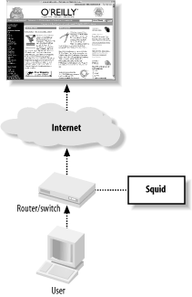

9.1 How It Works
Interception caching involves some network trickery, so it is helpful
for you to understand what happens between the client and Squid.
I'll use Figure 9-1 and the
following sample tcpdump output to explain how the
packets are intercepted as they flow through your network.

The user-agent wants to request a resource, say /index.html from an origin server, say
www.oreilly.com. It needs the
origin server's IP address, so it makes a DNS
request: Packet 1
TIME: 19:54:41.317310
UDP: 206.168.0.3.2459 -> 206.168.0.2.53
DATA: .d...........www.oreilly.com.....
---------------------------------------------------------------------------
Packet 2
TIME: 19:54:41.317707 (0.000397)
UDP: 206.168.0.2.53 -> 206.168.0.3.2459
DATA: .d...........www.oreilly.com.............PR.....%........PR.
....$........PR...ns1.sonic.net.........PR...ns2.Q........PR
...ns...M...............h.............!.z.......b......Now that it has the IP address, the user-agent initiates a TCP
connection to the origin server on port 80: Packet 3
TIME: 19:54:41.320652 (0.002945)
TCP: 206.168.0.3.3897 -> 208.201.239.37.80 Syn
DATA: <No data> The switch/router notices a TCP SYN packet with destination port 80.
What happens next depends on the particular interception technology.
In the case of layer four switches and policy routing, the device
simply forwards the TCP packet to Squid's datalink
layer (Ethernet) address. This works only when Squid is directly
attached to the network device. For WCCP, the router encapsulates the
TCP packet into a GRE packet. Because the GRE packet has its own IP
address, it can be routed through multiple subnets. In other words,
WCCP doesn't require Squid to be directly attached
to the router. The Squid host's operating system receives the
intercepted packet. For layer four switches, the TCP/IP packet is
unchanged from the earlier explanation. If the packet is encapsulated with GRE, the host removes the outer IP
and GRE headers and places the original TCP/IP packet on the input
queue. Note that the Squid host receives an IP packet for a foreign address
(the origin server's). Normally this packet is
dropped because its destination address doesn't
match any of the local interface addresses. To make the host accept
the foreign packet, you must enable IP forwarding on most operating
systems. The client's TCP/IP packet is processed by the
packet filtering code. The packet matches a rule that instructs the
kernel to forward or divert this packet to Squid. Without this rule,
the kernel simply forwards this packet on its way to the origin
server, which isn't what you want. Note that the SYN packet's destination port is 80,
but Squid may be listening on a different port, such as 3128. The
packet filtering rules allow you to change the port number. You
don't need to make Squid listen on port 80. You
can't see this step with tcpdump
because the diverted packet doesn't flow through the
network interface code again. The packet filter's redirection rule is still
necessary even if you have Squid listen on port 80. Simply making the
port numbers match doesn't allow Squid to receive
the intercepted packets. The redirection rule is the magic that
delivers foreign packets to Squid. Squid receives notification of the new connection, which it accepts.
The kernel sends a SYN/ACK packet back to the client: Packet 4
TIME: 19:54:41.320735 (0.000083)
TCP: 208.201.239.37.80 -> 206.168.0.3.3897 SynAck
DATA: <No data> As you can see, the source address is the origin
server's, even though this packet
didn't reach the origin. The operating system simply
copies and swaps the source and destination IP addresses from the SYN
packet into the reply. The user-agent receives the SYN/ACK packet, fully establishing the
TCP connection. The user-agent now believes it is connected to the
origin server, so it writes the HTTP request: Packet 5
TIME: 19:54:41.323080 (0.002345)
TCP: 206.168.0.3.3897 -> 208.201.239.37.80 Ack
DATA: <No data>
---------------------------------------------------------------------------
Packet 6
TIME: 19:54:41.323482 (0.000402)
TCP: 206.168.0.3.3897 -> 208.201.239.37.80 AckPsh
DATA: GET / HTTP/1.0
User-Agent: Wget/1.8.2
Host: www.oreilly.com
Accept: */*
Connection: Keep-AliveSquid receives the HTTP request. It uses the HTTP
Host header to convert the partial URL into a full
URL. In this case, you'll see http://www.oreilly.com/ in the
access.log file. From this point on, Squid treats the request normally. As usual,
cache hits are returned immediately. Cache misses are forwarded to
the origin server. Lastly, here is the response that Squid receives from the origin
server: Packet 8
TIME: 19:54:41.448391 (0.030030)
TCP: 208.201.239.37.80 -> 206.168.0.3.3897 AckPsh
DATA: HTTP/1.0 200 OK
Date: Mon, 29 Sep 2003 01:54:41 GMT
Server: Apache/1.3.26 (Unix) PHP/4.2.1 mod_gzip/1.3.19.1a mo
d_perl/1.27
P3P: policyref="http://www.oreillynet.com/w3c/p3p.xml",CP="C
AO DSP COR CURa ADMa DEVa TAIa PSAa PSDa IVAa IVDa CONo OUR
DELa PUBi OTRa IND PHY ONL UNI PUR COM NAV INT DEM CNT STA P
RE"
Last-Modified: Sun, 28 Sep 2003 23:54:44 GMT
ETag: "1b76bf-b910-3ede86c4"
Accept-Ranges: bytes
Content-Length: 47376
Content-Type: text/html
X-Cache: MISS from www.oreilly.com
X-Cache: MISS from 10.0.0.1
Connection: keep-alive
You don't want your switch/router to intercept the
connections that Squid makes to origin servers. If that happens,
Squid ends up talking to itself and can't satisfy
any cache misses. The best way to avoid forwarding loops like this is
to make sure that your users and Squid connect to separate interfaces
on the switch/router. Whenever feasible, you should apply the
interception rules to specific interfaces. Obviously, you should not
enable interception on the interface that Squid uses.
|